Quickstart of SaivDr Package
A brief introduction to image restroation with SaivDr Package
Contents
- Summary
- Add the package to search path
- Read a source image
- Create a degradation system object
- Generate an observed image
- Create an NSOLT system object
- Create an analysis and synthesis system object
- Create an ISTA-based image restoration system object
- Create a step monitor system object
- Perform ISTA-based image restoration
- Extract the final evaluation
- Perform Wiener filtering
- Compare deblurring performances
- Release notes
Summary
SaivDr is an abbreviation of Sparsity-Aware Image and Volume Data Restoration. This package is developed for
- Experiments,
- Development and
- Implementation
of sparsity-aware image and volume data restoraition algorithms.
In particular, this package provides a rich set of classes related to non-separable oversampled lapped transform ( NSOLTs ) , which allows for convolutional layers with
- Parseval tight (paraunitary),
- Symmetric and
- Multiresolution
properties. For some features, we have prepared custom layer classes with Deep Learning Toolbox. It is now easy to incorporate them into flexible configurations and parts of your network.

Information about SaivDr Package is given in Contents.m. The HELP command can be used to see the contents as follows:
type README.md
# SaivDr Package for MATLAB/Simulink [](https://jp.mathworks.com/matlabcentral/fileexchange/45084-saivdr-package)
System object definitions for sparsity-aware image and volumetric data restoration
## Summary
SaivDr is an abbreviation of Sparsity-Aware Image and Volumetric Data Restoration.
This package is developed for
* Experiments,
* Development and
* Implementation
of sparsity-aware image and volumetric data restoraition algorithms.
In particular, this package provides a rich set of classes related to
[non-separable oversampled lapped transform ( *NSOLTs* )](https://sigport.org/documents/multidimensional-nonseparable-oversampled-lapped-transforms-theory-and-design) , which allows for convolutional layers with
* Parseval tight (paraunitary),
* Symmetric and
* Multiresolution
properties. For some features, we have prepared custom layer classes with
Deep Learning Toolbox. It is now easy to incorporate them into flexible
configurations and parts of your network.
Information about SaivDr Package is given in Contents.m. The HELP command can
be used to see the contents as follows:
>> help SaivDr
Sparsity-Aware Image and Volume Data Restoration Package
Files
mytest - Script of unit testing for SaivDr Package
quickstart - Quickstart of *SaivDr Package*
setpath - Path setup for *SaivDr Package*
* Package structure
+ saivdr -+- testcase -+- dcnn
| |
| +- sparserep
| |
| +- embedded
| |
| +- dictionary -+- nsolt -+- design
| | |
| | +- nsoltx -+- design
| | |
| | +- nsgenlot -+- design
| | |
| | +- nsgenlotx -+- design
| | |
| | +- olaols
| | |
| | +- olpprfb
| | |
| | +- udhaar
| | |
| | +- generalfb
| | |
| | +- mixture
| | |
| | +- utility
| |
| +- restoration -+- ista
| | |
| | +- pds
| | |
| | +- metricproj
| | |
| | +- denoiser
| |
| +- degradation -+- linearprocess
| | |
| | +- noiseprocess
| |
| +- utility
|
+- dcnn
|
+- sparserep
|
+- embedded
|
+- dictionary -+- nsolt -+- design
| | |
| | +- mexsrcs
| |
| +- nsoltx -+- design
| | |
| | +- mexsrcs
| |
| +- nsgenlot -+- design
| |
| +- nsgenlotx -+- design
| |
| +- olaols
| |
| +- olpprfb
| |
| +- udhaar
| |
| +- generalfb
| |
| +- mixture
| |
| +- utility
|
+- restoration -+- ista
| |
| +- pds
| |
| +- metricproj
| |
| +- denoiser
|
+- degradation -+- linearprocess
| |
| +- noiseprocess
|
+- utility
## Requirements
* MATLAB R2013b or later. R2021a is recommended.
* Signal Processing Toolbox
* Image Processing Toolbox
* Optimization Toolbox
## Recomendation
* Deep Learning Toolbox
* Global Optimization Toolbox
* Parallel Computing Toolbox
* MATLAB Coder
* GPU Coder
## Brief introduction
1. Change current directory to where this file contains on MATLAB.
2. Set the path by using the following command:
>> setpath
3. Build MEX codes if you have MATLAB Coder.
>> mybuild
4. Several example codes are found under the second layer directory
'examples' of this package. Change current directory to one under
the second layer directiory 'examples' and execute an M-file of
which name begins with 'main,' such as
>> main_xxxx
and then execute an M-file of which name begins with 'disp,' such as
>> disp_xxxx
## Contact address
Shogo MURAMATSU,
Faculty of Engineering, Niigata University,
8050 2-no-cho Ikarashi, Nishi-ku,
Niigata, 950-2181, JAPAN
http://msiplab.eng.niigata-u.ac.jp/
## References
* Genki Fujii, Yuta Yoshida, Shogo Muramatsu, Shunsuke Ono, Samuel Choi, Takeru Ota,
Fumiaki Nin, Hiroshi HibinoTitle: "OCT Volumetric Data Restoration with
Latent Distribution of Refractive Index," Proc. of 2019 IEEE International
Conference on Image Processing (ICIP), pp.764-768, Sept. 2019
* Yuhei Kaneko, Shogo Muramatsu, Hiroyasu Yasuda, Kiyoshi Hayasaka, Yu Otake,
Shunsuke Ono, Masahiro Yukawa, "Convolutional-Sparse-Coded Dynamic Mode Decompsition
and Its Application to River State Estimation," Proc. of 2019 IEEE International
Conference on Acoustics, Speech and Signal Processing (ICASSP), pp.1872-1876,
May 2019
* Shogo Muramatsu, Samuel Choi, Shunske Ono, Takeru Ota, Fumiaki Nin, Hiroshi Hibino,
"OCT Volumetric Data Restoration via Primal-Dual Plug-and-Play Method," Proc.
of 2018 IEEE International Conference on Acoustics, Speech and Signal Processing
(ICASSP), pp.801-805, Apr. 2018
* Shogo Muramatsu, Kosuke Furuya and Naotaka Yuki, "Multidimensional Nonseparable
Oversampled Lapped Transforms: Theory and Design," IEEE Trans. on Signal Process.,
Vol.65, No.5, pp.1251-1264, DOI:10.1109/TSP.2016.2633240, March 2017.
* Kota Horiuchi and Shogo Muramatsu, "Fast convolution technique for Non-separable
Oversampled Lapped Transforms," Proc. of Asia Pacific Signal and Information Proc.
Assoc. Annual Summit and Conf. (APSIPA ASC), Dec. 2016
* Shogo Muramatsu, Masaki Ishii and Zhiyu Chen, "Efficient Parameter Optimization
for Example-Based Design of Non-separable Oversampled Lapped Transform," Proc.
of 2016 IEEE Intl. Conf. on Image Process. (ICIP), pp.3618-3622, Sept. 2016
* Shogo Muramatsu, "Structured Dictionary Learning with 2-D Non-separable
Oversampled Lapped Transform," Proc. of 2014 IEEE International Conference
on Acoustics, Speech and Signal Processing (ICASSP), pp.2643-2647, May 2014
* Kousuke Furuya, Shintaro Hara and Shogo Muramatsu, "Boundary Operation of
2-D non-separable Oversampled Lapped Transforms," Proc. of Asia Pacific Signal
and Information Proc. Assoc. Annual Summit and Conf. (APSIPA ASC), Nov. 2013
* Shogo Muramatsu and Natsuki Aizawa, "Image Restoration with 2-D Non-separable
Oversampled Lapped Transforms," Proc. of 2013 IEEE International Conference
on Image Process. (ICIP), pp.1051-1055, Sep. 2013
* Shogo Muramatsu and Natsuki Aizawa, "Lattice Structures for 2-D Non-separable
Oversampled Lapped Transforms," Proc. of 2013 IEEE International Conference
on Acoustics, Speech and Signal Process. (ICASSP), pp.5632-5636, May 2013
## Acknowledgement
This work was supported by JSPS KAKENHI Grant Numbers JP23560443, JP26420347 and JP19H04135.
## Contributors
### Developpers
* Shintaro HARA, 2013-2014
* Natsuki AIZAWA, 2013-2014
* Kosuke FURUYA, 2013-2015
* Naotaka YUKI, 2014-2015
* Yuya KODAMA, 2020-
* Yasas GODAGE, 2021-
### Test contributers
* Hidenori WATANABE, 2014-
* Kota HORIUCHI, 2015-
* Masaki ISHII, 2015-
* Takumi KAWAMURA, 2015-
* Kenta SEINO, 2015-
* Satoshi NAGAYAMA, 2017-
* Shota KAYAMORI, 2017-
* Genki FUJII, 2017-
* Naoki YAMAZAKI, 2017-
* Yuhei KANEKO, 2017-
* Nawapan LAOCHAROENSUK, 2019-
* Yusuke ARAI, 2020-
Add the package to search path
Before using SaivDr Package , it is required to add the package top and 'mexcode' directory in the second layer to the MATLAB's search path. After moving to the top directory, execute the following command:
setpath
Read a source image
In the followings, an image restoration procedure with this package is described. As a preliminary, let us read an RGB picture as the source image.
srcImg = imread('peppers.png'); width = 256; % Width height = 256; % Height px = 64; % Horizontal position of cropping py = 64; % Vertical position of cropping orgImg = im2double(srcImg(py:py+height-1,px:px+width-1,:));
Create a degradation system object
Suppose that we only have a degraded image 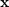 which is contaminated by Gaussian kernel blur 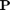 with addtive white Gaussian noise 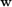, i.e.
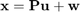 ,
where 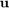 is an unknown clearn original image.
Let us generate a degradation process by using the following classes provided by SaivDr Package.
- saivdr.degradation.linearprocess.BlurSystem
- saivdr.degradation.noiseprocess.AdditiveWhiteGaussianNoiseSystem
- saivdr.degradation.DegradationSystem
import saivdr.degradation.linearprocess.BlurSystem blurtype = 'Gaussian'; % Blur type boundary = 'Symmetric'; % Boundary option hsigma = 2; % Sigma for Gausian kernel blur = BlurSystem(... % Instantiation of blur process 'BlurType', blurtype,... 'SigmaOfGaussianKernel', hsigma,... 'BoundaryOption',boundary); import saivdr.degradation.noiseprocess.AdditiveWhiteGaussianNoiseSystem nsigma = 5; % Sigma for AWGN for scale [0..255] noise_var = (nsigma/255)^2; % Normalize sigma to scale [0..1] awgn = AdditiveWhiteGaussianNoiseSystem(... % Instantiation of AWGN 'Mean', 0,... 'Variance', noise_var); import saivdr.degradation.DegradationSystem dgrd = DegradationSystem(... % Integration of blur and AWGN 'LinearProcess', blur,... 'NoiseProcess', awgn);
Generate an observed image
Then, let us generate an observed image by the DegradationSystem object, dgrd , created in the previous step.
obsImg = dgrd.step(orgImg);
Create an NSOLT system object
In order to restore the clearn image , let us assume that is represented by a dictionary as
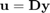 ,
where 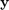 is a coefficient vector and expected to be sparse, i.e. the number of non-zero coefficients are few.
A non-separalbe oversampled lapped transform (NSOLT) can be used as a dictionary and instantiated by using the following static factory method:
- saivdr.dictionary.nsoltx.NsoltFactory.createOvsdLpPuFb2d()
In this deblurring demo, a pre-designed NSOLT is loaded from the following location:
- ( ROOT_OF_SAIVDR )/examples/quickdesign/results/
If you are interested in the design of NSOLT, please refer, for example, to the following function:
- ( ROOT_OF_SAIVDR )/examples/quickdesign/main_quickdesign.m
% Parameters for NSOLT nLevels = 4; % # of wavelet tree levels nDecs = [2 2]; % Decimation factor nChs = [4 4]; % # of channels nOrds = [4 4]; % Polyphase order nVm = 1; % # of vanishing moments % Location which containts a pre-designed NSOLT sdir = './examples/quickdesign/results'; % Load a pre-designed dictionary from a MAT-file %%{ s = load(sprintf('%s/nsolt_d%dx%d_c%d+%d_o%d+%d_v%d_l%d_n%d_%s.mat',... sdir,nDecs(1),nDecs(2),nChs(1),nChs(2),nOrds(1),nOrds(2),nVm,nLevels,... 2048,'peppers128x128'),'nsolt'); %%} %{ virLvTrn = 1; s = load(sprintf('%s/nsolt_d%dx%d_c%d+%d_o%d+%d_v%d_vl%d_vn%d_%s_sgd.mat',... sdir,... nDecs(1),nDecs(2),nChs(1),nChs(2),... nOrds(1),nOrds(2),nVm,virLvTrn,... 2048,'peppers128x128'),'nsolt'); %} nsolt = s.nsolt; % saivdr.dictionary.nsolt.OvsdLpPuFb2dTypeIVm1System % Conversion of nsolt to new package style % nsolt = saivdr.dictionary.utility.fcn_upgrade(nsolt); % Show the atomic images by using a method atmimshow() hfig1 = figure(1); nsolt.atmimshow() hfig1.Name = 'Atomic images of NSOLT';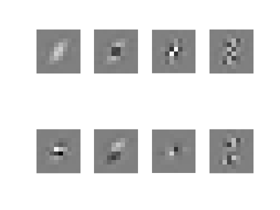
Create an analysis and synthesis system object
Since the object of OvsdLpPuFb2dTypeIVm1System, nsolt , is not able to process images by itself, we have to construct an analysis and synthesis system for analyzing and synthesizing an image, respectively. The following two systems can do these tasks:
- saivdr.dictionary.generalfb.Synthesis2dSystem
- saivdr.dictionary.generalfb.Analysis2dSystem
import saivdr.dictionary.generalfb.Analysis2dSystem import saivdr.dictionary.generalfb.Synthesis2dSystem % Change the output mode of NSOLT to 'AnalysisFilters' and % draw inpulse responses of the analysis filters. nsolt.release() nsolt.OutputMode = 'AnalysisFilters'; analysisFilters = nsolt.step([],[]); % Change the output mode of NSOLT to 'SynthesisFilters' and % draw inpulse responses of the synthesis filters. nsolt.release() nsolt.OutputMode = 'SynthesisFilters'; synthesisFilters = nsolt.step([],[]); % Create analysis ans synthesis system objects with % frequency domain filtering mode. analyzer = Analysis2dSystem(... 'DecimationFactor', nDecs,... 'AnalysisFilters', analysisFilters,... 'NumberOfLevels', nLevels,... 'FilterDomain','Frequency'); analyzer.UseGpu = false; synthesizer = Synthesis2dSystem(... 'DecimationFactor',nDecs,... 'SynthesisFilters',synthesisFilters,... 'FilterDomain','Frequency'); synthesizer.setFrameBound(1); synthesizer.UseGpu = false;
The following static factory methods can also be used to create lattice-based analysis and synthesis systems:
- saivdr.dictionary.nsoltx.NsoltFactory.createSynthesis2dSystem()
- saivdr.dictionary.nsoltx.NsoltFactory.createAnalysis2dSystem()
An available implementation is illustrated below.
import saivdr.dictionary.nsoltx.NsoltFactory
% saivdr.dictionary.nsoltx.NsoltAnalysis2dSystem
analyzer = NsoltFactory.createAnalysis2dSystem(nsolt);
% saivdr.dictionary.nsoltx.NsoltSynthesis2dSystem
synthesizer = NsoltFactory.createSynthesis2dSystem(nsolt);
Create an ISTA-based image restoration system object
Let the 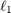-norm of , i.e. , be the sparsity measure of the coefficients. Then, the debluring problem can be formulated as
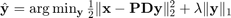.
Provided that the blur process is known and given as a linear process, the iterative shrinkage/thresholding algorithm (ISTA) becomes applicable to solve the above problem. In SaivDr Package, image restoration with ISTA is implemented in the following class:
- saivdr.restoration.ista.IstaImRestoration
% Instantiation of ISTA system object import saivdr.restoration.ista.IstaImRestoration2d lambda = 0.00185; % lambda ista = IstaImRestoration2d(... 'Synthesizer', synthesizer,... % Synthesizer (Dictionary) 'AdjOfSynthesizer', analyzer,... % Analyzer (Adj. of dictionary) 'LinearProcess', blur,... % Blur process 'Lambda', lambda); % Parameter lambda ista.Eps0 = 1e-6;
Create a step monitor system object
ISTA iteratively approaches to the optimum solution. In order to observe the intermediate results, the following class can be used:
- saivdr.utility.StepMonitoringSystem
% Parameters for StepMonitoringSystem isverbose = true; % Verbose mode isvisible = true; % Monitor intermediate results hfig2 = figure(2); % Figure to show the source, observed and result image hfig2.Name = 'ISTA-based Image Restoration'; % Instantiation of StepMonitoringSystem import saivdr.utility.StepMonitoringSystem stepmonitor = StepMonitoringSystem(... 'DataType', 'Image',... 'SourceImage', orgImg,... % Original image 'ObservedImage', obsImg,... % Observed image 'IsMSE', false,... % Switch for MSE evaluation 'IsPSNR', true,... % Switch for PSNR evaluation 'IsSSIM', false,... % Switch for SSIM evaluation 'IsVerbose', isverbose,... % Switch for verbose mode 'IsVisible', isvisible,... % Switch for display intermediate result 'ImageFigureHandle',hfig2); % Figure handle % Set the object to the ISTA system object ista.StepMonitor = stepmonitor;
Perform ISTA-based image restoration
STEP method of IstaImRestoration system object, ista , executes the ISTA-based image restoration to deblur the observed image. As the result, a restored image
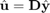
is obtained.
fprintf('\n ISTA') resImg = ista.step(obsImg); % STEP method of IstaImRestoration
ISTA ( 1) PSNR = 27.20 [dB] ( 2) PSNR = 27.95 [dB] ( 3) PSNR = 28.39 [dB] ( 4) PSNR = 28.69 [dB] ( 5) PSNR = 28.91 [dB] ( 6) PSNR = 29.08 [dB] ( 7) PSNR = 29.22 [dB] ( 8) PSNR = 29.33 [dB] ( 9) PSNR = 29.42 [dB] ( 10) PSNR = 29.50 [dB] ( 11) PSNR = 29.57 [dB] ( 12) PSNR = 29.63 [dB] ( 13) PSNR = 29.68 [dB] ( 14) PSNR = 29.72 [dB] ( 15) PSNR = 29.76 [dB] ( 16) PSNR = 29.80 [dB] ( 17) PSNR = 29.83 [dB] ( 18) PSNR = 29.86 [dB] ( 19) PSNR = 29.89 [dB] ( 20) PSNR = 29.91 [dB] ( 21) PSNR = 29.93 [dB] ( 22) PSNR = 29.95 [dB] ( 23) PSNR = 29.97 [dB] ( 24) PSNR = 29.99 [dB] ( 25) PSNR = 30.00 [dB] ( 26) PSNR = 30.02 [dB] ( 27) PSNR = 30.03 [dB] ( 28) PSNR = 30.04 [dB] ( 29) PSNR = 30.05 [dB] ( 30) PSNR = 30.06 [dB] ( 31) PSNR = 30.07 [dB] ( 32) PSNR = 30.08 [dB] ( 33) PSNR = 30.09 [dB] ( 34) PSNR = 30.10 [dB] ( 35) PSNR = 30.10 [dB] ( 36) PSNR = 30.11 [dB] ( 37) PSNR = 30.12 [dB] ( 38) PSNR = 30.12 [dB] ( 39) PSNR = 30.13 [dB] ( 40) PSNR = 30.13 [dB] ( 41) PSNR = 30.14 [dB] ( 42) PSNR = 30.14 [dB] ( 43) PSNR = 30.14 [dB] ( 44) PSNR = 30.15 [dB] ( 45) PSNR = 30.15 [dB] ( 46) PSNR = 30.15 [dB] ( 47) PSNR = 30.16 [dB] ( 48) PSNR = 30.16 [dB] ( 49) PSNR = 30.16 [dB] ( 50) PSNR = 30.16 [dB] ( 51) PSNR = 30.16 [dB] ( 52) PSNR = 30.16 [dB]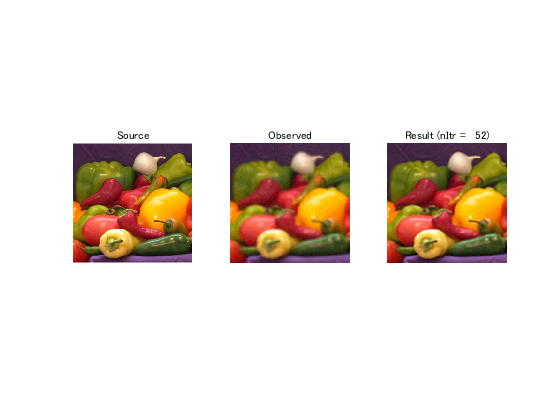
Extract the final evaluation
The object of StepMonitoringSystem, stepmonitor , stores the evaluation values calculated iteratively in ISTA as a vector. The GET method of stepmonitor can be used to extract the number of iterations and the sequence of PSNRs.
nItr = stepmonitor.nItr; psnrs = stepmonitor.PSNRs; psnr_ista = psnrs(nItr);
Perform Wiener filtering
As a reference, let us show a result of Wiener filter.
% Create a step monitor system object for the PSNR evaluation stepmonitor = StepMonitoringSystem(... 'SourceImage',orgImg,... 'MaxIter', 1,... 'IsMSE', false,... 'IsPSNR', true,... 'IsSSIM', false,... 'IsVisible', false,... 'IsVerbose', isverbose); % Use the same blur kernel as that applied to the observed image, obsImg blurKernel = blur.BlurKernel; % Estimation of noise to signal ratio nsr = noise_var/var(orgImg(:)); % Wiener filter deconvolution of Image Processing Toolbox wnfImg = deconvwnr(obsImg, blurKernel, nsr); % Evaluation fprintf('\n Wiener') psnr_wfdc = stepmonitor.step(wnfImg); % STEP method of StepMonitoringSystem
Wiener ( 1) PSNR = 25.58 [dB]
Compare deblurring performances
In order to compare the deblurring performances between two methods, ISTA-based deblurring with NSOLT and Wiener filter, let us show the original, observed and two results in one figure together.
hfig3 = figure(3); % Original image x subplot(2,2,1) imshow(orgImg) title('Original image {\bf u}') % Observed image u subplot(2,2,2) imshow(obsImg) title('Observed image {\bf x}') % Result u^ of ISTA subplot(2,2,3) imshow(resImg) title(['{\bf u}\^ by ISTA : ' num2str(psnr_ista) ' [dB]']) % Result u^ of Wiener filter subplot(2,2,4) imshow(wnfImg) title(['{\bf u}\^ by Wiener: ' num2str(psnr_wfdc) ' [dB]'])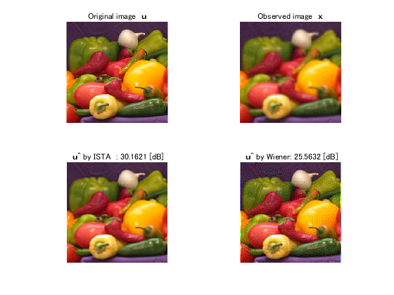
Release notes
RELEASENOTES.txt contains release notes on SaivDr Package.
type('RELEASENOTES.txt')
* Release notes on Sparsity-Aware Image and Volumetric Data Restoration Package
- SaivDr20210627
-- (Minor) Revised GPU implementation
--- saivdr.dcnn.nsoltBlockDct2dLayer
--- saivdr.dcnn.nsoltBlockIdct2dLayer
--- saivdr.dcnn.nsoltBlockDct3dLayer
--- saivdr.dcnn.nsoltBlockIdct2dLayer
-- (Minor) Revised code generation when no GPU device is available
--- saivdr.dcnn.mexsrcs.*
-- (Minor) Revised to avoid erros when no GPU device is available
--- saivdrrestoration.AbstOlsOlaProcess
- SaivDr20210620
-- (Major) GPU Coder support in some modules
--- mybuild.m
--- saivdr.dcnn.mexsrcs
-- (Major) Added some PyTorch modules
--- appendix/torch_nsolt
--- examples/dcnn
-- (Minor) Added new sample codes
--- examples/dcnn/main_nsolt_diclrn_tree_rgb.mlx
--- examples/dcnn/main_nsolt_sisr_rgb.mlx
- SaivDr20200903
-- (Major) Created custom layer classes for Deep Learning Toolbox
--- saivdr.dcnn.*
--- examples/dcnn
-- (Minor) Added the live script version of QUICKSTART
--- quickstartlive.mlx
- SaivDr20200229
-- (Major) Revised to use property 'NumberOfLevels' and deprecated to set nLevels argument for STEP methods
--- saivdr.dictionary.*
--- saivdr.restoration.*
-- (Major) Start to support GPU Arrays
--- saivdr.dictionary.*
--- saivdr.degradation.*
--- saivdr.restoration.*
-- (Major) Enhanced volumetric data visualization
--- saivdr.utility.VolumetricDataPlot
--- saivdr.utility.VolumetricDataVisualizer
-- (Major) Added new classes for restoration
--- saivdr.restoration.ista
--- saivdr.restoration.pds
--- saivdr.restoration.metricproj
--- saivdr.restoration.denoiser
-- (Major) Revised specification, which may affects to the backward compatibility
--- saivdr.sparserep.AbstSparseApproximationSystem
-- (Minor) Added createAnalysisSystem and createSynthesisSystem method.
--- saivdr.dictionary.nsoltx.NsoltFactory
-- (Minor) Revised handling of mex functions
--- saivdr.dictionary.nsoltx.*
-- (Minor) QUICKSTART was revised by rewriting method calls as the OBJ.METHOD style
- SaivDr20180827
-- (Major) Added wrapper classes for parallel processing
--- saivdr.dictionary.olaols.*
--- saivdr.utility.OlsOlaProcess2d
--- saivdr.utility.OlsOlaProcess3d
- SaivDr20170504
-- (Major) Excluded the automatic MEX code generation functions
--- Prepared the code generation script MYBUILD instead
-- (Minor) Revised header comments of each file
- SaivDr20160610
-- (Minor) Removed the dependency on Global Optimization Toolbox when GA is not used
--- saivdr.dictionary.nsoltx.design.AbstNsoltDesignerGaFmin
-- (Minor) Added new sample codes
--- examples/icip2016
- SaivDr20160314
-- (Minor) Clarified the array dimension for code generation in R2016a
--- saivdr.dictionary.nsoltx.AbstNsoltCoefManipulator2d
--- saivdr.dictionary.nsoltx.AbstNsoltCoefManipulator3d
--- saivdr.dictionary.olpprfb.AbstOLpPrFbCoefManipulator3d
-- (Minor) Fixed test method calling
--- saivdr.testcase.dictionary.nsgenlotx.design.NsGenLotDesignerFrqTestCase
- SaivDr20151126
-- (Major) Migrated to GitHub
-- (Major) Option 'GradObj' became available for a single-level Type-I NSOLT
--- saivdr.dictionary.nsoltx.design.NsoltDictionaryLearning
-- (Minor) Fixed a bug of frequency domain synthesis operations
--- saivdr.dictionary.generalfb.*
- SaivDr20150902
-- (Minor) Fixed a bug and revised to support boundary operation
--- saivdr.degradation.linearprocess.DecimationSystem
--- saivdr.degradation.linearprocess.BlurSystem
-- (Minor) Added SURE-LET denoising scripts in examples/dirlot
- SaivDr20150610
-- (Major) Frequency domain analysis and synthesis operations became available
--- saivdr.dictionary.generalfb.*
-- (Major) Different numbers settings became available for decimation factors
--- saivdr.dictionary.nsoltx.*
-- (Minor) Added a package of 1-D oversampled linear-phase paraunitary
filter banks
--- saivdr.dictionary.olpprfb.*
-- (Minor) Quickstart was revised to use frequency domain filtering.
- SaivDr20141206
-- (Major) Thoroughly revised NSOLT and NS-GenLOT codes for acceleration
--- saivdr.dictionary.nsoltx.*
--- saivdr.dictionary.nsgenlotx.*
-- (Major) 3-D Volume data processing became available
--- saivdr.dictionary.nsoltx.*
--- saivdr.dictionary.udhaar.*
--- saivdr.utility.PolyPhaseMatrix3d
--- saivdr.utility.PolyPhaseCoefOperation3dSystem
-- (Major) Type-II NSOLT with ps < pa became available
--- saivdr.dictionary.nsoltx.*
- SaivDr20140512
-- (Minor) Fixed a bug in a support function and updated data
in examples/icassp2014
- SaivDr20140202
-- (Major) Fixed the following classes to run without MATLAB Coder
--- saivdr.dictionary.nsolt.TypeIAnalysisSystem
--- saivdr.dictionary.nsolt.TypeIIAnalysisSystem
--- saivdr.dictionary.nsolt.TypeISynthesisSystem
--- saivdr.dictionary.nsolt.TypeIISynthesisSystem
-- (Minor) Removed confliction caused by multiple calls of
saivdr.dictonary.nsolt.mexsrcs.fcn_autobuild in parallel execution
-- (Minor) Fixed saivdr.utility.StepMonitoringSystem to rehash path
just after downloading ssim_index.m
-- (Minor) Fixed overwriting problem of files under
examples/{icassp2013_rev,icip2013_rev}/results
- SaivDr20140122
-- (Major) IterativeHardThresholdingWithNsolt and
IterativeHardThresholdingWithUdHaar were removed and integrated into
a new class IterativeHardThresholding.
-- (Major) IterativePursuitWithNsolt and GradientPursuitWithUdHaar were
removed and integrated into a new class GradientPursuit.
-- (Minor) Bug in StepMonitoringSystem was fixed.
-- (Minor) Property 'Smax' of saivdr.restoration.ista.IstaImRestoration
was renamed to 'MaxIter' so that what it means becomes clear.
-- (Minor) Timing to call fcn_autobuild() in TypeINsoltAnalysisSystem,
TypeIINsoltAnalysisSystem, TypeINsoltSynthesisSystem and
TypeIINsoltSynthesisSystem is moved to the object setup process.
- SaivDr20140118
-- HTML document of Quickstart was revised.
- SaivDr20140117
-- This is a brand-new package!
* Known issues
- IMFILTER function of MATLAB R2017a has a bug with circular boundary extension mode.
This bug affects to some classes in saivdr.dictionary.udhaar.*.
Please search #BUG: 1554862 on https://jp.mathworks.com/support/bugreports.
- Parallel Computing Toolbox of MATLAB R2016b has a bug on search path priority.
This bug affects to class saivdr.dictionary.nsoltx.design.NsoltDesignFrq.
Please search #BUG: 1446838 on https://jp.mathworks.com/support/bugreports.
- On R2017a, if PARPOOL starts automatically when MYTEST is executed,
an error occurs in the second test of NsoltDesignerFrqTestCase.
For now, this problem is avoided by running PARPOOL before running MYTEST.
---